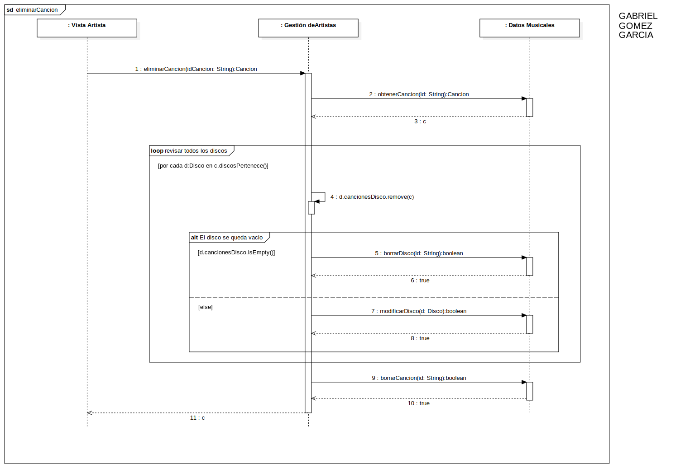

Interaction1
UMLInteraction
Youtify
::
Secuencia
::
eliminar Canción - Gabriel Gomez
::
Interaction1
Description
none
Diagrams

eliminarCancion
Fragments
El disco se queda vacio
revisar todos los discos
Participants
: Vista Artista
: Gestión deArtistas
: Datos Musicales
Messages
Message1 (→)
Message2 (→)
c (→)
d.cancionesDisco.remove (→)
Message3 (→)
true (→)
Message4 (→)
true (→)
Message5 (→)
true (→)
c (→)
Properties
Name
Value
name
Interaction1
stereotype
null
visibility
public
isReentrant
true
Owned Elements
eliminarCancion